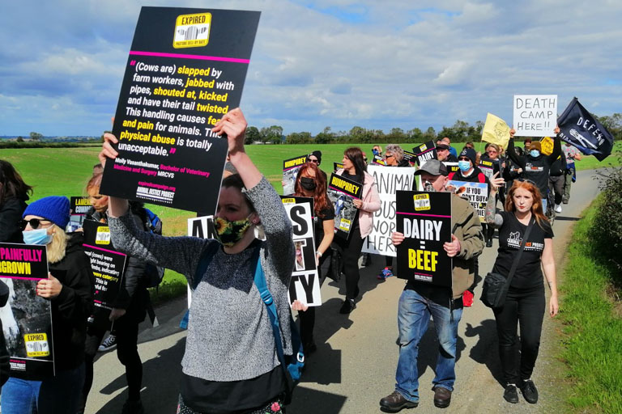

| Animal Justice Project é uma organização sem fins lucrativos sediada no Reino Unido
fundada
em dezembro de 2014 que faz campanha predominantemente pelo fim da pecuária.
Trabalhamos
com ativistas em todo o país para construir o Slot Gacor Hari Ini na capacidade,
escala
e eficácia do movimento dos direitos dos animais; para que possamos alcançar
coletivamente nossa visão compartilhada de uma sociedade que é justa. |
 |
| A missão do Animal Justice Project é uma sociedade livre de exploração animal e
trabalhamos
estrategicamente em cinco áreas-chave para conseguir isso: Investigação secreta,
campanha de pressão, educação, organização e engajamento público. |
| O Animal Justice Project é guiado por valores inclusivos, empoderados, compassivos e
justos.
Esses valores nos permitem trabalhar com respeito e dignidade pelos direitos de
todos os
animais. |